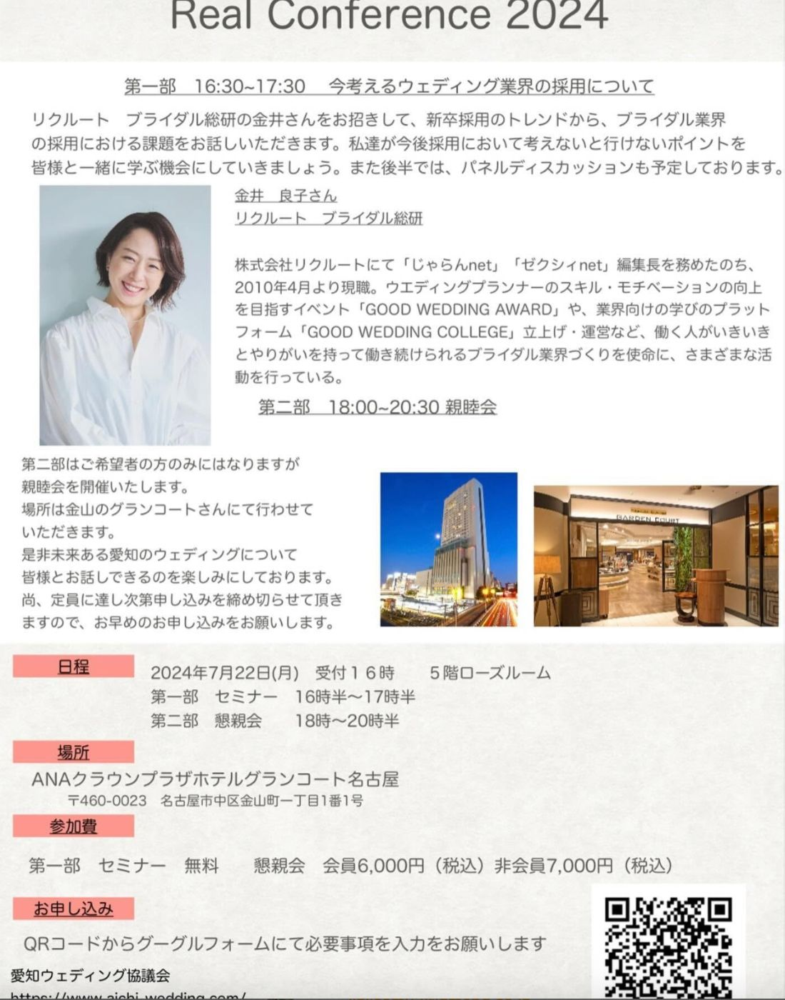

愛知ウェディング協議会、夏のリアルカンファレンスを開催いたします！

今回は、リクルート ブライダル総研の金井さんをお招きします。新卒採用のトレンドから、ブライダル業界の採用における課題についてお話しいただきます。
人手不足が続くなか、「良い人材にどう出会い、どう来てもらうか」は、いまや業界全体の切実な課題です。目の前の一組の結婚式を支えるのも人なら、100年後にウェディングを繋いでいくのも人。採用は、業界の未来そのものに直結するテーマです。
私達が今後、採用において考えないといけないポイントを、皆様と一緒に学ぶ機会にしていきましょう。
株式会社リクルートにて「じゃらんnet」「ゼクシィnet」編集長を務めたのち、2010年4月より現職。ウエディングプランナーのスキル・モチベーションの向上を目指すイベント「GOOD WEDDING AWARD」や、業界向けの学びのプラットフォーム「GOOD WEDDING COLLEGE」立上げ・運営など、働く人がいきいきとやりがいを持って働き続けられるブライダル業界づくりを使命に、さまざまな活動を行っている。
後半では、パネルディスカッションも予定しております。データや一般論を聞くだけでなく、現場の実感を交えて語り合うことで、「では自社はどうするか」がより具体的に見えてくるはずです。ぜひご参加ください。
第二部はご希望者の方のみとなりますが、親睦会を開催いたします。場所は金山のグランコートさんにて行わせていただきます。是非、未来ある愛知のウェディングについて皆様とお話しできるのを楽しみにしております。
尚、定員に達し次第申し込みを締め切らせていただきますので、お早めのお申し込みをお願いします。
セミナーは無料です。採用にお悩みの会員の皆さま、そして非会員の皆さまも、ぜひこの機会にご参加ください。みなさまにお会いできますこと、楽しみにしております。